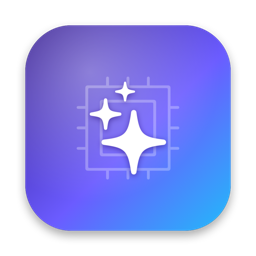

Free · MIT · 100% Swift · zero dependencies
LLMs at the speed
of unified memory.
A native Mac app for MLX models from Hugging Face, with an inference engine written from scratch in Swift and Metal. No Python, no packages, nothing between unified memory and the GPU.
Why is generating tokens memory-bound?
Generating a token means reading every weight once. A 4-bit 7B model is about 4 GB, so a 197 GB/s memory bus caps decode near 48 tokens per second. MLX Runner reaches 41: fused Metal kernels dequantize and multiply in one pass, the next token is picked on the GPU in the same command buffer, and the following step is queued before this one is read back. Nothing sits between unified memory and the GPU.
- decode
- 343 tok/s
- tokens
- 0
- elapsed
- 0.00 s
mlxr bench measured on an M2 Pro (16 GB). The text is ours; the pace is the model's.- 343tok/s decode, Qwen2.5 0.5B
- 41.0tok/s on Mistral 7B, about 85% of the memory-bandwidth cap
- 8–15%faster decode with Sieve on small models (opt-in, changes output)
- 0third-party dependencies
Speed
Nine models, measured.
Tokens per second on an M2 Pro (16 GB), 4-bit models. Every rate here was measured with mlxr bench, which you can run on your own Mac.
| Model | Decode, short context | Decode, 1K context | Prefill, 512 tokens | Weights |
|---|---|---|---|---|
| Qwen2.5 0.5B Instruct | 343 tok/s | 278 tok/s | 4,270 tok/s | 278 MB |
| Qwen3 0.6B | 286 tok/s | 234 tok/s | 3,020 tok/s | 336 MB |
| Qwen3.5 0.8B | 271 tok/s | 260 tok/s | 2,780 tok/s | 424 MB |
| Llama 3.2 1B Instruct | 202 tok/s | 185 tok/s | 1,720 tok/s | 695 MB |
| Gemma 3 1B (QAT) | 189 tok/s | 173 tok/s | 2,070 tok/s | 732 MB |
| Qwen3.5 2B | 133 tok/s | 130 tok/s | 1,158 tok/s | 1.06 GB |
| Phi-3.5 mini | 70 tok/s | 61 tok/s | 466 tok/s | 2.15 GB |
| Gemma 3 4B | 67 tok/s | 62 tok/s | 498 tok/s | 2.56 GB |
| Mistral 7B v0.3 | 41.0 tok/s | 39.3 tok/s | 247 tok/s | 4.08 GB |
Greedy decode, Sieve off; the rows were measured for different releases. Against mlx-lm on the same files (one run each), decode is 6–16% faster on the sub-1B Qwen models and Phi-3.5, between 4% faster and 5% slower on most others, and 17% slower on Gemma 2. Prefill at 512 tokens ranges from 29% faster to 19% slower, and mlx-lm prefills faster on short and very long prompts. The full comparison with mlx-lm and Ollama.
The 7B ceiling: every token reads every weight, once.
So memory bandwidth sets the limit, not compute. This M2 Pro reads 197 GB/s, which caps a 4.08 GB model at about 48 tok/s.
New in 2.2 · opt-in
Sieve: up to 15% faster decode, by approximating the output layer.
A model's last layer scores every token in the vocabulary on every step, though the sampler uses only a handful of those scores. With Sieve on, a small 4-bit approximation scores them all, and the exact score is computed only for the likeliest (up to 16,384). Output can differ, so it is off by default. Each model is fitted once, in one to six minutes.
| Model | Gain | Answers changed | Sieve off | Sieve on | Likeliest token kept | Vocabulary |
|---|---|---|---|---|---|---|
| Gemma 3 1B (QAT) | +15.1% | 6 of 30 | 188.1 tok/s | 216.5 tok/s | 99.51% | 262K |
| Qwen3.5 0.8B | +12.4% | 7 of 30 | 254.8 tok/s | 286.3 tok/s | 99.61% | 248K |
| Gemma 4 E2B OptiQ | +12.1% | 2 of 30 | 73.3 tok/s | 82.2 tok/s | 99.90% | 262K |
| Llama 3.2 1B | +8.5% | 5 of 30 | 202.4 tok/s | 219.6 tok/s | 99.95% | 128K |
| Qwen3 0.6B | +8.2% | 5 of 30 | 287.9 tok/s | 311.6 tok/s | 100.00% | 152K |
| Qwen3.5 4B | +8.1% | 2 of 30 | 61.8 tok/s | 66.8 tok/s | 99.85% | 248K |
| Qwen3 8B | +3.9% | 0 of 30 | 38.3 tok/s | 39.8 tok/s | 100.00% | 152K |
| Phi-3.5 mini | +0.9% | 4 of 30 | 70.2 tok/s | 70.8 tok/s | 99.71% | 32K |
| Mistral 7B v0.3 | +0.7% | 0 of 30 | 41.1 tok/s | 41.4 tok/s | 100.00% | 33K |
Greedy decode at 16 tokens of context, median of three alternating runs, M2 Pro (16 GB), 2026-11-12. At 1,024 tokens the gains are within 2 points of these, lower on most models. This table and the one above were measured for different releases, so a model's rate can differ between them (Qwen3.5 0.8B: 271 there, 255 here); compare within a table. Answers changed: ten prompts answered with Sieve off and on under three seeds with the default sampler, up to 96 tokens each; how many of the 30 answers differ anywhere. Likeliest token kept: measured by the fit on up to 2,048 held-out states; the fit raises its rank until this reaches 99.5%.
It changes output
The approximation is not exact, so some answers diverge; the table counts them. Off, it costs nothing and output is unchanged. A model that has not been fitted runs at its normal speed.
Where it pays
The gain follows the output layer's share of a step: 8–15% on models up to 4B with a large vocabulary, 4% on Qwen3 8B, and not worth turning on for Phi-3.5 mini or Mistral 7B.
Not measured
Benchmark scores, perplexity, long contexts, tool calls, thinking, and sampler settings other than greedy and the default. The fit and its test use the model's own short answers. Models over 8B could not be fitted on 16 GB.
mlxr sieve mlx-community/Qwen3-0.6B-4bit # fit once
mlxr run mlx-community/Qwen3-0.6B-4bit "Explain RoPE" --sieve balancedIn the app: the Sieve switch and Fit button in the chat inspector. Also --sieve balanced on mlxr serve.
Engine
Written from scratch, for Metal.
No mlx-swift: MLX Runner runs MLX models on its own kernels, from the same files mlx-lm reads. Any compatible mlx-community repo works without conversion.
- Unified memoryone copy of the weights, in page-aligned Metal buffers
- q · k · vone fused 4-bit matvec over three matrices
- Norm · RoPE · KVRMSNorm, RoPE and the KV-cache append in one kernel
- Attentiononline softmax across simdgroups
- gate · up · downgate and up in one fused matvec; the residual add folds into the norm
- Next tokenpicked on the GPU: penalty, top-k, min-p, top-p and the draw
Prefill on tensor tiles
Quantized GEMMs on
simdgroup_matrixtiles, each weight tile dequantized once and shared by 32 tokens, and flash attention.KV-cache prefix reuse
Prompt tokens shared with the previous request are skipped, so follow-ups start almost instantly.
Sparse attention, on by default
From 5,128 tokens of context each new token attends to the first and latest tokens plus the 2,048 that score highest. Decode at 30K is 1.4–3× faster than dense, and output changes: perplexity rises by about 3% or less on most models measured, 8% on Gemma 4 E2B. Speed and quality per model.
Runs today
qwen3qwen3_5qwen2llamamistralphi3gemma 1–4
Each type is tested on at least one checkpoint: generation, and prefill matching token-by-token decode. Not yet: mixture-of-experts, vision and audio. Verified checkpoints.
App
A Mac app, not a wrapper.
SwiftUI with Liquid Glass on macOS 26. Search the Hub, download, chat, and serve the loaded model to your tools.
Command line
mlxr, the same engine in your terminal.
Ollama-style commands on the app's model library: pull, run or chat, serve, fit Sieve and benchmark.
mlxr pull mlx-community/Qwen3-4B-4bitmlxr run mlx-community/Qwen3-4B-4bit "Explain RoPE" --no-thinkmlxr serve <model> --port 1234mlxr sieve <model>mlxr bench <model>
Every command · no app needed: install only the CLI.
$ mlxr run mlx-community/gemma-3-1b-it-qat-4bit "Write a haiku about Metal shaders." --sieve balanced --temp 0 --repeat-penalty 1 --seed 42 --max 256
Loaded gemma-3-1b-it-qat-4bit [gemma3_text, q4g64, 26 layers, gemma] in 1.24s
sparse attention off: the context length (4096) is below 5128 tokens, where it starts
sieve: balanced (head by rows: rank 192, 15723 exact rows per token, 24% of the head's bytes; on 2048 held-out states the dense argmax is kept in 99.51%, 0.60% of sampled tokens change (top-k 40), KL mean 0.1170 (median 0.00000))
Dark metal glows bright,
Reflecting skies, a cool hue,
Worlds of color bloom.
$ MLXR_BENCH_DECODE=1 mlxr bench mlx-community/gemma-3-1b-it-qat-4bit
# …
decode @ 16: 198.2 tok/s (wall 5.05 ms, gpu 5.04 ms per token)
decode @1024: 177.7 tok/s (wall 5.63 ms, gpu 5.62 ms per token)
# …
$ MLXR_SIEVE=balanced MLXR_BENCH_DECODE=1 mlxr bench mlx-community/gemma-3-1b-it-qat-4bit
# …
decode @ 16: 227.7 tok/s (wall 4.39 ms, gpu 4.39 ms per token)
decode @1024: 204.2 tok/s (wall 4.90 ms, gpu 4.89 ms per token)
# …Local server
Your tools already speak its API.
OpenAI-compatible: the Responses API with typed streaming events, Chat Completions and function tools. Point any OpenAI SDK at http://localhost:1234/v1. This exchange is real, captured from Qwen3 0.6B.
curl http://localhost:1234/v1/chat/completions \
-H "Content-Type: application/json" \
-d '{"model": "Qwen3-0.6B-4bit",
"messages": [{"role": "user",
"content": "What is the weather in Berlin right now?"}],
"tools": [{"type": "function", "function": {
"name": "get_weather",
"parameters": {"type": "object",
"properties": {"city": {"type": "string"}},
"required": ["city"]}}}]}'
# The model calls it. Reply with a "tool" message and it finishes the turn.
"finish_reason": "tool_calls",
"message": {"role": "assistant", "content": null,
"tool_calls": [{"id": "call_d450Vb67…", "type": "function",
"function": {"name": "get_weather",
"arguments": "{\"city\":\"Berlin\"}"}}]}- Tool calling on Qwen, Llama 3.1+ and Mistral v0.3 models (Gemma and Phi-3.5 have no tool format):
tool_choice, parallel calls and the full call → result → answer loop. - Safe by default. Localhost only; other
Hostheaders and unknown browserOrigins are refused. An API key is required on the LAN. - Reasoning included. Qwen3 and Qwen 3.5 thinking comes back as
reasoning_contentor areasoningitem.
Security
Model files are untrusted input.
MLX Runner runs files from the internet on your GPU and can open a port, so everything it reads is checked first. Security policy.
Validated before the GPU
safetensors headers, tensor offsets, config dimensions, token ids and every weight shape are checked first.
Verified downloads
Every LFS file is checked against its SHA-256 from the Hub. Your Hugging Face token lives in the Keychain.
Signed updates
An update installs only if its Ed25519-signed
SHA256SUMS, its checksum and the code signature all verify.Collects nothing
Prompts and replies never leave your Mac. The only network calls are Hugging Face for models and GitHub for updates.

Get MLX Runner
For Apple silicon Macs running macOS 15 or newer. Free and open source, MIT licensed.
| File | Size | SHA-256 |
|---|---|---|
| MLX-Runner-<version>-macos-arm64.dmg | … | … |
| mlxr-<version>-macos-arm64.tar.gz | … | … |
| SHA256SUMS | … | … |
| SHA256SUMS.sig | … | … |
First launch
Drag MLX Runner to Applications. It is ad-hoc signed, not notarized by Apple, so macOS blocks the first launch: right-click it and choose Open, or run:
xattr -dr com.apple.quarantine "/Applications/MLX Runner.app"Updates then arrive through Check for Updates…, verified before they install.
Only the CLI
mlxr is a single binary and doesn't need the app. In Terminal:
curl -LO https://github.com/BackendStack21/mlx-runner/releases/download/<tag>/mlxr-<version>-macos-arm64.tar.gz
tar -xzf mlxr-<version>-macos-arm64.tar.gz
sudo mkdir -p /usr/local/bin
sudo install -m 755 mlxr-<version>-macos-arm64/mlxr /usr/local/bin/mlxr
mlxr # prints helpUse curl as shown: macOS quarantines an archive downloaded in a browser, and the binary then won't start. To update, run mlxr upgrade (sudo mlxr upgrade when it is in /usr/local/bin); 1.x has no upgrade command, so run these commands once. To check the archive first, see Verify.
Verify
Verify before you run it.
Every release is built by GitHub Actions from a tagged commit. Its checksum, the release signature and the build provenance tie the file you have to that build.
Show the commands
Download the app, the checksum list and its signature
curl -LO https://github.com/BackendStack21/mlx-runner/releases/download/<tag>/MLX-Runner-<version>-macos-arm64.dmg curl -LO https://github.com/BackendStack21/mlx-runner/releases/latest/download/SHA256SUMS curl -LO https://github.com/BackendStack21/mlx-runner/releases/latest/download/SHA256SUMS.sigFor the CLI, download
mlxr-<version>-macos-arm64.tar.gzinstead.Check the SHA-256
shasum -a 256 -c SHA256SUMS --ignore-missingExpect
MLX-Runner-<version>-macos-arm64.dmg: OK.Check the release signature
curl -fsSLo mlx-runner.pub https://raw.githubusercontent.com/BackendStack21/mlx-runner/main/packaging/update-key.pub openssl pkeyutl -verify -pubin -inkey mlx-runner.pub -rawin -in SHA256SUMS -sigfile SHA256SUMS.sigExpect
Signature Verified Successfully(needs OpenSSL 3:brew install openssl).Check where it was built
# GitHub CLI: https://cli.github.com gh attestation verify MLX-Runner-<version>-macos-arm64.dmg --repo BackendStack21/mlx-runnerSigstore provenance in a public transparency log, tied to this repository's release workflow and commit.